자기비파괴검사산업기사(구) (2002-03-10 기출문제)
1과목: 자기탐상시험원리
1. 자분탐상시험에서 연속법 또는 잔류법 검사방법을 선택할 때 가장 많이 고려되어야 할 사항인 것은?
- 자계의 세기(magnetic field intensity)
- 항자력(coercive force)
- 투자율(permeability)
- 보자성(retentivity)
(정답률: 알수없음)

2. 자분탐상검사의 전류에 대한 설명이 올바른 것은?
- 교류전류를 사용하는 경우는 원칙적으로 표면결함의 검출에 한한다.
- 직류전류를 사용하는 경우는 원칙적으로 표면결함의 검출에 한한다.
- 교류전류를 사용하는 경우는 원칙적으로 내부결함을 검출하기 위하여 사용한다.
- 교류전류를 사용하는 경우는 원칙적으로 외부, 내부 결함을 모두 검출할 수 있다.
(정답률: 알수없음)
3. 자기이력곡선에서 폭이 좁을 때의 특성을 나타낸 것중 올바른 것은?
- 영구자석의 특성이 있다.
- 낮은 잔류자계의 특성을 갖는다.
- 낮은 투자율의 특성을 갖는다.
- 높은 자기저항의 특성이 있다.
(정답률: 알수없음)
4. 프로드법을 이용한 자분탐상검사에서 탐상유효 범위에 영향을 미치는 탐상조건중 부적합한 것은?
- 프로드 간격
- 전류의 종류
- 반자계
- 시험면과 전극의 접촉상태
(정답률: 알수없음)
5. 자성체 중 자계에 끌리며 자력선과 평행으로 나열되는 물체는?
- 상자성체
- 반자성체
- 강자성체
- 비자성체
(정답률: 알수없음)
6. 자분을 형성시켜 줄 수 있는 시험편의 구조적 또는 형태적 특성을 무엇이라 하는가?
- 불연속
- 결함
- 지시
- 변형
(정답률: 알수없음)
7. 시험체의 양끝에서 전류를 통전시켰을 때 시험체내에서 자화될 수 있는 길이는 어떻게 되겠는가?
- 시편의 투자율에 영향을 받는다.
- 자계의 강도가 변한다.
- 자계의 강도에 영향을 받지 않는다.
- 자계가 변화할 수 있는 원인이 된다.
(정답률: 알수없음)
8. 자분탐상시험에서 자화전류치로 인하여 시험체에 손상을 가장 적게 줄 수 있는 자화법은?
- 원형자화
- 선형자화
- 극성자화
- 잔류자화
(정답률: 알수없음)
9. 어떤 전하(q)가 있을 때 이 전하로부터 거리(r)만큼 떨어진 곳에, 같은 크기의 전하에 작용하는 힘(F, 자계의 세기)을 나타내는 관계식은? (단, k는 비례상수임)
- F = k(q/r)2
- F = (q/r)2
- F = k(r/q)2
- F = (r/q)2
(정답률: 알수없음)
10. 자속밀도와 자계의 관계를 나타내는 식은? (단, B : 자속밀도, H : 자계의 세기, μ : 투자율, a : 전도율, ρ : 전하밀도)
- B = μ × H
- B = ρ × H
- B = (μ + H)/ρ
- B = a/(μ × H)
(정답률: 알수없음)
11. 건식법을 사용한 연속법에서 자분적용 시기는?
- 자화직전
- 자화직후
- 자화도중
- 자화전부터 자화직후까지
(정답률: 알수없음)
12. 다음 중 강자성체의 투자율에 영향을 미치는 요인이 아닌 것은?
- 열처리 상태
- 표면 상태
- 가공상태
- 작용시킨 자계의 세기
(정답률: 알수없음)
13. 직선의 도선에 전류를 흘렸을 때 그 주위에 생기는 자계의 모양을 설명한 법칙은?
- 플레밍의 왼손법칙
- 플레밍의 오른손법칙
- 자력선속법칙
- 자기저항법칙
(정답률: 알수없음)
14. 부품의 탈자 여부를 측정하는데 사용되는 기기는?
- 자장계
- 자석
- 철분지시계
- 서베이미터
(정답률: 알수없음)
15. 프로드법으로 탐상할 때 프로드간격으로 알맞는 것은?
- 8 ∼ 15인치
- 3 ∼ 8인치
- 2 ∼ 3인치
- 16 ∼ 32인치
(정답률: 알수없음)
16. 다음 맥류 중 교류성분이 많은 순으로 나열된 것은?
- 단상반파 - 단상전파 - 삼상반파 - 삼상전파정류
- 삼상전파 - 단상전파 - 삼상반파 - 단상반파정류
- 단상전파 - 단상반파 - 삼상전파 - 삼상반파정류
- 단상전파 - 삼상반파 - 단상반파 - 삼상전파정류
(정답률: 알수없음)
17. 전류가 직경 20mm인 환봉에 흐르고 있다. 같은 전류가 직경 40mm인 환봉에 흐를 때 표면에서 자계의 자장 강도는 어떻게 되는가?
- 감소한다.
- 일정하다.
- 2배로 증가한다.
- 4배로 증가한다.
(정답률: 알수없음)
18. 다음 중 자분탐상시험시 자분의 적용이 필요없는 탐상법은?
- 형광습식자분탐상법
- 자기기록탐상법
- 비형광건식자분탐상법
- 잔류자기법(잔류법)
(정답률: 알수없음)
19. 자장계를 이용하여 잔류 자계를 측정할 때 자계의 유무를 알 수 있는 것은 다음 중 어느 것에 의해서인가?
- 원형 자장
- 선형 자장
- 누설 자장
- 자속밀도
(정답률: 알수없음)
20. 다음 중 열중성자를 이용한 중성자투과시험을 가장 효과적으로 적용할 수 있는 것은?
- 알루미늄합금의 산화피막 두께 측정
- 강주조품의 내부공동 검출
- 강관내부에 위치한 플라스틱 링(plastic ring)의 상태확인
- 스테인레스강 용접부의 결함검출
(정답률: 알수없음)
2과목: 자기탐상검사
21. 강용접부를 자분탐상시험하였을 때 모재와 용접비드가 접하는 부분에 용접비드를 따라 단속적인 선형지시가 나타났다면, 이 지시에 해당되는 결함의 종류는?
- 용입부족
- 융합부족
- 터짐
- 언더컷
(정답률: 알수없음)
22. 전류관통법으로 자화된 파이프의 단면에서 자계강도가 가장 센 부분은?
- 파이프의 양끝
- 파이프의 바깥면
- 파이프의 내면
- 파이프벽의 중간
(정답률: 알수없음)
23. 자성체가 큐리온도에 도달했을 때 어떤 결과가 예상되는가?
- 상자성체로 변환다.
- 반자성체로 변한다.
- 비자성체로 변한다.
- 자성에는 무관하고 방사성 물질로 변한다.
(정답률: 알수없음)
24. 자분탐상시험시 고려해야 할 사항 중 맞지 않는 것은?
- 자계 또는 자속의 방향이 시험체의 표면에 가능한한 평행이 되도록 한다.
- 내부결함의 검출 또는 연속법에 의한 시험의 경우에는 교류자화한다.
- 대형시험체는 국부적으로 자화시키는 자화방법을 선택한다.
- 검출하고자 하는 결함에 가능한한 수직이 되는 방향의 자속을 시험체에 형성시킨다.
(정답률: 알수없음)
25. 비형광의 자분탐상시험에서 관찰시에는 조명을 주로 가시광선으로 하는데 가시광선 영역의 파장범위는?
- 300∼400nm
- 400∼700nm
- 500∼800nm
- 600∼900nm
(정답률: 알수없음)
26. 자분탐상시험의 전류관통법에 의한 자화의 특징으로 맞는 것은?
- 닫힌 자기회로를 구성하므로 이음철봉이 필요로 하지 않는다.
- 자계의 강도는 전류관통봉의 중심으로부터의 거리에 비례한다.
- 자화전류를 직류로 사용하면 표면 아래 결함의 검출이 어렵다.
- 자화전류로 교류를 사용하면 직류의 경우보다 표피효과가 적다.
(정답률: 알수없음)
27. 다음 중 홀 효과(Hall effect)의 발생원리는?
- 얇은 철판의 길이방향으로 전류를 흐르게 하고 그 수직(철판의 두께)방향으로 자계를 걸면 발생한다.
- 얇은 철판의 두께방향으로 전류를 흐르게 하고 그 길이방향으로 자계를 걸면 발생한다.
- 두꺼운 철판의 대각선 방향으로 전류를 흐르게 하고 그 역방향으로 자계를 걸어주면 발생한다.
- 두꺼운 철판의 대각선 방향으로 자계를 흐르게 하고 그 역방향으로 전류를 걸어주면 발생한다.
(정답률: 알수없음)
28. 사용중에 있는 시험체를 자분탐상시험하였을 때 찾아낼수 있는 결함은?
- Hot tear
- 피로균열
- Burst
- Shrinkage Crack
(정답률: 알수없음)
29. 그림은 적용하는 자화전류(교류, 직류, 삼상전파정류, 단상반파정류)에 따라 표면하의 결함 검출능력이 다르다는 것을 보여준다. 여기서 교류(A.C)는 어느 것인가?
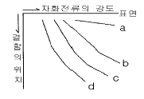
- a
- b
- c
- d
(정답률: 알수없음)
30. 휴대형 교류극간식 탐상기를 이용하여 강용접부의 자분탐상시험을 하는 경우, 적절한 탐상피치는 얼마인가?
- 자극폭과 동일길이
- 20∼30mm
- 70∼100mm
- 자극폭의 약 2배 길이
(정답률: 알수없음)
31. 다음의 자분탐상 검사방법 중 시험체의 손상에 대한 우려가 가장 적은 것은?
- 극간법
- 직접접촉법
- 전류관통법
- 프로드법
(정답률: 알수없음)
32. 그림 중에서 봉강에 교류를 사용한 축통전법을 나타낸 것은? (단, X축은 반지름의 크기, Y축은 자장의 세기임)
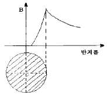
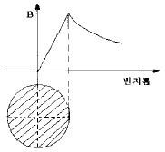
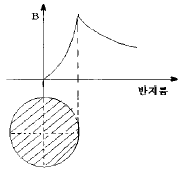
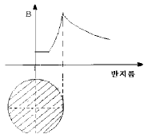
(정답률: 알수없음)
33. 다음중 와전류탐상 시험코일로써 표면형 코일이 사용되는 것은?
- 열 교환기용 배관의 보수검사
- 열간에 있어서의 선재의 탐상
- 플라스틱의 두께측정
- 항공기 엔진의 와류탐상
(정답률: 알수없음)
34. 대형구조물의 용접부위를 교류 극간법으로 자분탐상시험할 때 주의할 사항은?
- 반자계의 영향
- 시험부의 두께 영향
- 탈자에 주의할 것
- 용접선에 대한 자극 배치
(정답률: 알수없음)
35. 검사 후 표면에 묻어있는 오일, 그리스 등은 자외선등 아래에서 어떻게 보이는가?
- 우유빛색
- 적색
- 보라색
- 색이 나타나지 않음
(정답률: 알수없음)
36. 전류관통법에 의한 자화의 특징이 아닌 것은?
- 전류관통법에 따른 가능한 자기회로는 폐회로이므로 반자장이 없다.
- 시험체의 크기 및 자기특성에 따라 자화전류를 흘리도록하여 적정한 자계의 강도에 의해 자화할 수 있다.
- 자계의 강도는 전류관통봉의 중심으로 부터 거리에 반비례하지만 거리가 같으면 동일한 감도로 탐상할 수 있다.
- 탈자할 때 시험체에 교류전류값을 적용한 경우, 직류 전류값으로 서서히 낮춰 0에 기깝게 해야 한다.
(정답률: 알수없음)
37. 자분탐상검사시 검출된 지시의 관찰에 관한 설명이다. 옳지 않은 것은?
- 자분모양은 실제 불연속의 크기보다 크게 나타날 수 있다.
- 자분모양의 관찰은 지시모양이 형성된 후 1∼30분 이내에 수행한다.
- 자분모양의 관찰시에는 형성된 지시가 관련지시인지 여부를 확인해야 한다.
- 정확한 관찰을 위해서 돋보기 등의 보조기구를 사용해도 무방하다.
(정답률: 알수없음)
38. 다음 중 피로균열과 같은 미세한 표면결함 검출에 가장 효과적인 자분탐상시험 방법은?
- 반파 직류를 이용한 건식자분법
- 직류를 이용한 습식자분법
- DC를 이용한 건식자분법
- AC를 이용한 습식자분법
(정답률: 알수없음)
39. 다음 중 의사모양의 발생원인이 아닌 것은?
- 이종 금속 접합부
- 용접부 개선면의 라미네이션
- 자기펜 자국
- 용접부의 열영향 경계부
(정답률: 알수없음)
40. 다음 중 탈자가 필요한 경우?
- 처음보다 낮은 전류로 다시 자화를 해야할 때
- Curie Point이상에서 열처리될 때
- 보자성이 낮은 연철 및 주철재료인 경우
- 잔류자기가 크게 문제되지 않는 대형 주조품
(정답률: 알수없음)
3과목: 자기탐상관련규격및컴퓨터활용
41. 아래 내용은 무엇에 대한 설명인가?
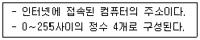
- 도메인 이름
- DNS
- LAN
- IP address
(정답률: 알수없음)
42. ASME Sec.Ⅴ에서 규정한 형광자분탐상시 사용되는 자외선 조사등의 강도는 시험체 표면에서 최소 얼마 이상 되어야 하는가?
- 1000 ㎼/㎝2
- 500 ㎼/㎝2
- 300 ㎼/㎝2
- 100 ㎼/㎝2
(정답률: 알수없음)
43. KS D 0213에서 A형(원형) 표준시험편에서 원의 직경은?
- ø5mm
- ø10mm
- ø15mm
- ø20mm
(정답률: 알수없음)
44. ASME 규격에 의한 극간법(yoke법)의 설명중 틀린 것은?
- 표면결함 검출에 이용할 수 있다.
- 시험품을 전자석이나 영구자석의 두 극 사이에 둔다.
- 검사 시편의 두께가 1/4인치 이상인 경우는 교류형의 yoke가 같은 lifting power를 가진 직류나 영구자석의 yoke보다 탁월하다.
- 자화의 세기는 최소 lifting power를 결정하므로써 보정한다.
(정답률: 알수없음)
45. KS D 0213에 따른 표준시험편에 관한 내용중 틀린 것은?
- A형 표준시험편의 자분 적용은 연속법으로 한다.
- B형 대비시험편은 장치, 자분의 성능평가에 이용된다.
- C형 표준시험편은 B형 대비시험편의 적용이 곤란한 경우 사용된다.
- C형 표준시험편의 자분 적용은 연속법으로 한다.
(정답률: 알수없음)
46. KS D 0213에서 자분탐상시험의 통전 시간에 관한 내용으로 틀린 것은?
- 잔류법은 원칙적으로 1/4 ~ 1초로 한다.
- 충격 전류의 경우에는 1/120초 이상으로 한다.
- 충격 전류의 경우 3회 이상 통전을 되풀이하는 것으로 한다.
- 연속법은 원칙적으로 1/2 ~ 1초로 한다.
(정답률: 알수없음)
47. Window 환경에서 공유된 폴더를 사용하기 위한 방법이 올바른 순서로 나열된 것은?
- 네트워크 환경 → 컴퓨터 아이콘 → 공유 폴더 → 암호 입력
- 컴퓨터 아이콘 → 네트워크 환경 → 암호 입력 → 공유 폴더
- 네트워크 환경 → 암호 입력 → 컴퓨터 아이콘 → 공유 폴더
- 네트워크 환경 → 암호 입력 → 공유 폴더 → 컴퓨터 아이콘
(정답률: 알수없음)
48. 자화전류가 교류인 요크 장비의 리프팅 파워는 얼마 이상이어야 하는가? (단, 극간 거리는 최대로 한다.)
- 3.5 kg
- 4.5 kg
- 8.5 kg
- 9.5 kg
(정답률: 알수없음)
49. KS D 0213에서 의사 모양과 이를 확인하기 위한 방법을 연결한 것 중 잘못된 것은?
- 표면 거칠기 지시 - 시험면을 매끄럽게 하여 재시험한다.
- 자기펜의 흔적 - 탈자후 재시험한다.
- 전류지시 - 전류를 작게하여 재시험한다.
- 재질 경계지시 - 연속법으로 전류를 높여 재시험한다.
(정답률: 알수없음)
50. KS D 0213에 의거 자외선조사 장치의 필터가 통과시켜야 할 근 자외선의 파장은?
- 160∼240nm
- 240∼320nm
- 320∼400nm
- 400∼480nm
(정답률: 알수없음)
51. ASME Sec.V, Art.7의 축통전법에 의한 원형자화를 얻을 때의 자화전류 계산시 고려하여야 할 사항중 맞는 것은?
- 교류를 기준하여 계산한다.
- 피검사체의 내경을 기준한다.
- 원형이 아닌 경우 전류 통전방향에 수직인 단면의 평균 대각선 길이를 기준하여 전류를 계산한다.
- 필요한 전류를 얻기 어려울 경우 최대전류를 사용하고, 적절성 여부를 자분자장 지시계를 이용 판단한다.
(정답률: 알수없음)
52. ASME Sec.V Art.7에 규정한 자외선조사장치의 예열시간은?
- 5분 이상
- 10분 이상
- 15분 이상
- 20분 이상
(정답률: 알수없음)
53. 거리에 관계없이 자료발생 즉시 처리하는 양방향 통신 기능을 가진 정보처리 방식은?
- 온라인(On-Line) 처리
- 일괄(Batch) 처리
- 원격 일괄(Remote batch) 처리
- 분산 자료 처리(distributed data processing)
(정답률: 알수없음)
54. KS D 0213의 자분모양의 분류에 해당되지 않는 것은?
- 균열에 의한 자분모양
- 독립한 자분모양
- 중복된 자분모양
- 분산한 자분모양
(정답률: 알수없음)
55. KS D 0213 C형 표준시험편의 내용으로 틀린 것은?
- 분할선에 따라 5×10mm의 작은 조각으로 분리하여 사용한다.
- 인공흠이 있는 면이 시험면의 반대방향에 오도록 밀착시킨다.
- 밀착시 사용하는 양면 접착테이프의 두께는 100㎛이하로 한다.
- 자분의 적용은 연속법으로 한다.
(정답률: 알수없음)
56. ASME Sec.V Art.7의 전처리 범위는 어떻게 규정하고 있는가?
- (검사영역)+(인접지역 최소 1인치)
- (검사영역)+(인접지역 최소 2인치)
- (검사영역)+(인접지역 최소 1t) 단, t는 두께
- (검사영역)+(인접지역 최소 ½t) 단, t는 두께
(정답률: 알수없음)
57. ASME Sec.V Art.7에 의거 그림과 같이 환봉을 코일법으로 검사하고자 할 때 필요한 자화전류는? (단, 권수는 4회)
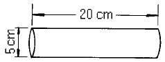
- 1460 A
- 2120 A
- 2810 A
- 3380 A
(정답률: 알수없음)
58. 시험편의 표시 중 A2-15/50(직선형)에서 ( )안의 설명으로 알맞는 것은?
- 결함의 모양
- 인공흠의 모양
- 판의 모양
- 자분의 입도
(정답률: 알수없음)
59. 윈도우에서 선택된 폴더나 파일의 정보 및 속성을 볼 수 있는 명령은?
- 데스크 톱
- 아이콘 정렬
- 새로 만들기
- 등록 정보
(정답률: 알수없음)
60. KS D 0213에서 자분탐상시험의 전처리에 대한 설명으로 잘못된 것은?
- 용접부 전처리는 시험범위보다 모재측으로 약 20㎜ 넓어야 한다.
- 시험품은 원칙적으로 분해하지 말아야 자분에 의한 손상을 막을 수 있다.
- 통전효과를 좋게 하기위해 시험품과 전극의 접촉부분을 깨끗하게 닦는다.
- 시험품이 시험전 자화되어 있을 경우에는 필요에 따라 탈자한다.
(정답률: 알수없음)
4과목: 금속재료 및 용접일반
61. 비정질합금의 제조법이 아닌 것은?
- 화학도금
- 금속가스의 증착
- 냉간가공법
- 액체급냉법
(정답률: 알수없음)
62. 탄소강 중 망간(Mn)의 영향을 바르게 설명한 것은?
- 강의 담금질 효과를 증대시켜 경화능이 커진다.
- 강의 점성을 저하시키고 가공성을 해친다.
- 연신율과 경도를 감소 시킨다.
- 주조성을 나쁘게 하고 고온에서 결정입의 성장을 촉진 시킨다.
(정답률: 알수없음)
63. 전위(dislocation)의 종류에 속하지 않는 것은?
- 나사전위
- 칼날전위
- 절단전위
- 혼합전위
(정답률: 알수없음)
64. 금속표면에 초경합금 스텔라이트 등의 특수합금을 용착시키는 방전경화법은?
- Chromizing
- Hard facing
- Calorizing
- Sheradizing
(정답률: 알수없음)
65. 다음 중 점용접의 3대 요소가 아닌 것은?
- 전극의 재질
- 용접 전류
- 통전 시간
- 가압력
(정답률: 알수없음)
66. 황동의 가공제품에서 나타나는 자연균열의 발생에 대한 방지책은?
- 탄산가스나 암모니아 분위기속에 보관한다.
- 습기 또는 수은속에 보관한다.
- 약 200℃ 에서 응력제거 풀림처리한다.
- 재결정온도 이상에서 담금질처리한다.
(정답률: 알수없음)
67. 베어링에 사용되는 구리합금의 대표적인 켈밋(kelmet)성분은?
- 70% Cu - 30% Pb합금
- 70% Pb - 30% Sn합금
- 60% Cu - 40% Zn합금
- 60% Pb - 40% Zn합금
(정답률: 알수없음)
68. 서브머지드 아크 용접에서 사용되는 다전극 방식이 아닌 것은?
- 직병렬식
- 텐덤식
- 횡병렬식
- 횡직렬식
(정답률: 알수없음)
69. 응력-변형선도에서 최대하중점을 표시한 것은?
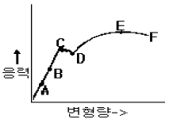
- B
- C
- D
- E
(정답률: 알수없음)
70. 용해 아세틸렌을 충전한 후 용기 전체 무게가 62.5[kgf]이었는데, B형 토치의 200번 팁으로 표준불꽃 상태에서 가스용접 후 아세틸렌 용기를 달아보았더니 무게가 60.5[kgf]이었다면 가스용접을 한 시간은 약 얼마인가? (단, 작업조건은 15℃, 1기압으로 가정한다.)
- 약 6시간
- 약 9시간
- 약 12시간
- 약 15시간
(정답률: 알수없음)
71. 다음 중에서 용접 지그(Jig)의 사용목적이 아닌 것은?
- 용접자세를 편리하게 한다.
- 용접이 곤란한 재료를 가능하도록 한다.
- 대량 생산을 하기 위하여 사용한다.
- 제품의 정밀도를 향상 시켜 준다.
(정답률: 알수없음)
72. 용접봉의 종류 중 내균열성이 가장 좋은 용접봉은?
- 저수소계
- 고산화철계
- 고셀루로우즈계
- 일미나이트계
(정답률: 알수없음)
73. FCC 결정구조를 갖는 금속에서 원자의 충전율(%)은?
- 36
- 68
- 74
- 80
(정답률: 알수없음)
74. 철광석을 용광로 속에서 코크스로 환원시켜 제련시킨 것은?
- 탄소강
- 순철
- 강철
- 용선
(정답률: 알수없음)
75. 보기와 같은 용접홈 모양과 용접방향에 대한 (?) 부분에 도시될 용접기호로 가장 적합한 것은?
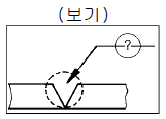
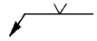
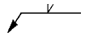
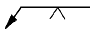
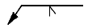
(정답률: 알수없음)
76. 용접결함 중 치수상의 결함인 것은?
- 융합불량
- 변형
- 용접균열
- 기공
(정답률: 알수없음)
77. 다음 중 가스 압접법의 특징이 아닌 것은?
- 압접 소요시간이 짧다.
- 원리적으로 전력이 필요없다.
- 용접부는 용융하지 않고 접합된다.
- 가스 압접은 매우 숙련된 작업자가 필요하다.
(정답률: 알수없음)
78. 원판형 전극사이에 용접물을 끼워 전극에 압력을 주면서 전극을 회전시켜 모재를 이동하면서 용접하는 방법으로 주로 기밀, 유밀을 필요로하는 이음에 적용되는 전기저항 용접법은?
- 심 용접법
- 플래시 용접법
- 업셋 용접법
- 테르밋 용접법
(정답률: 알수없음)
79. 피복제에 습기가 있는 상태로 용접했을 경우 많이 일어날 수 있는 현상으로 다음 중 가장 중요한 것은?
- 오버랩 현상이 일어난다.
- 크레이터가 생긴다.
- 언더컷이 생긴다.
- 기공이 생긴다.
(정답률: 알수없음)
80. 소결기계 재료에 대한 설명이 옳지 못한 것은?
- 재질은 철계분말이 주체이고 Cu, Sn, Pb 등의 분말을 배합한다.
- 배합된 재료는 산화성 분위기 중에서 연속식 전기로에서 소결한다.
- 소결된 부품은 사이징, 코이닝 공정에서 정확한 치수를 맞춘다.
- 성형압의 증가에 따라 밀도, 강도 및 연신율이 함께 가한다.
(정답률: 알수없음)